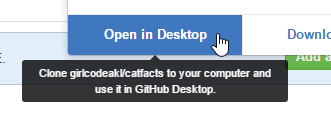
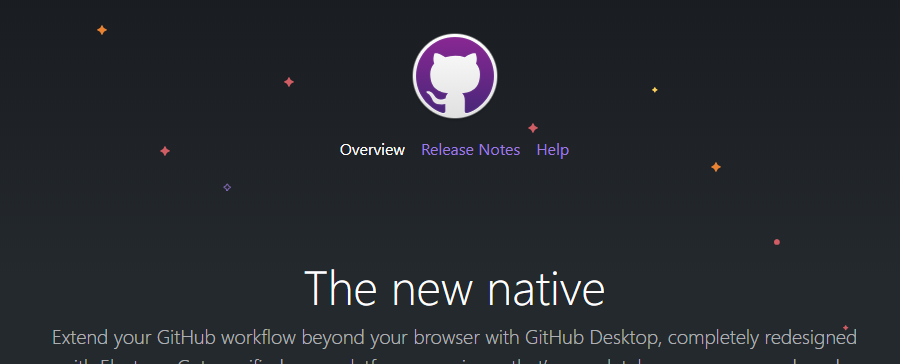
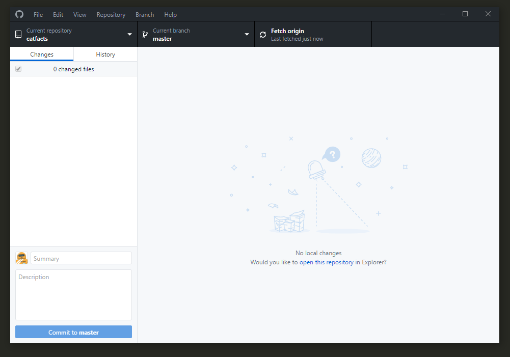
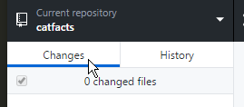
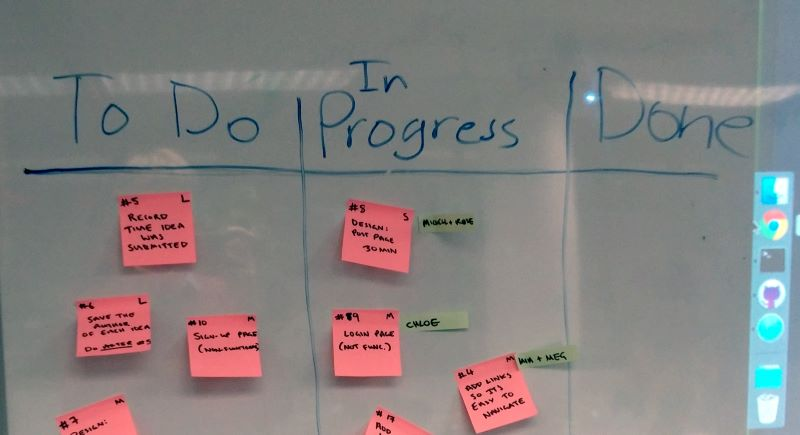
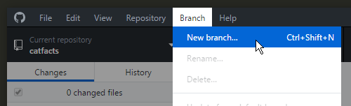
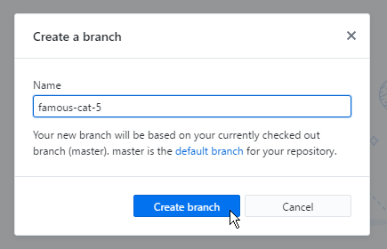
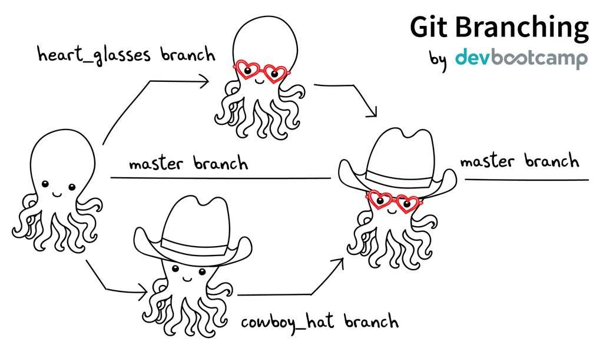
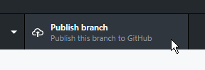

We're using Git to write some documents about cats.
One document is a list of famous cats. The other is a list of interesting cat facts that are totally true.
We'll use Post-It notes to make sure we each work on a different task, because if we all do the same thing that would be silly?
Part 1: Install Atom (text editor)
Download Atom (if you haven't already) and install it.
Part 2: Create a Github account at github.com
Go to github.com and sign up for a new account.
Go to our slack channel and tell us your Github username. Then we will give you permission to edit the cat facts!
(GitHub will send you an email. You must click on the link in this email to go to a confirmation page, then confirm your email address with GitHub.)
Part 3: Install Github Desktop
This is an app that works with the Github website.
Download Github Desktop if you haven't already. Install it, and log in with your new Github user name and password.
Part 4: Cloning
Our cat facts are stored on github.com. 'Cloning' means making a copy on your computer so you can work on it.
1. Go to the cat facts web page: cat facts.
2. Make sure you have signed in to the GitHub website, if you haven't already:

3. Click 'Clone or download', then choose 'Open in desktop' to clone the project using Github Desktop.


Github Desktop should pop up asking you where to save the files. Once you click OK, it will copy (aka clone) the repository to your computer.
WARNING! You should see a pop-up asking you what folder to save the project.
If you see a page like this, it is NOT working right:
If you see this page, the Github website and GitHub Desktop are not talking to each other properly. Please check (or ask a mentor to help you check):
- Check that you are logged into the GitHub website
- Check that you are logged into GitHub Desktop using the same account
- If it still doesn't work, close Google Chrome completely then try again.
Part 5: Ready to work
You now have a copy of the catfacts project on your computer. GitHub desktop shows the project.
GitHub Desktop has two main views: History, and Changes. We will usually look at the Changes view.
When you make changes, the changes will appear in GitHub Desktop so you can commit them and sync them.
Choose a task
The mentors should now have created some tasks to do and put them up on the whiteboard.
On the whiteboard, in real life, choose a task, move it to the Work In Progress column and write your name next to it.
Create a branch
Click on this button to create a new branch.
Give it a name based on the task you are going to do. (Make sure the 'From branch' is 'master'.)
When you create a branch, you are making your own working space. You can make changes there without affecting anyone else.
When your change is finished, you merge your changes back into the master branch (also known as the trunk).
Github Desktop lets us see our changes, but it's not for making changes. To actually make changes, we will use Atom
Open Atom, and choose File… Open Folder… open the folder where you saved the project. (It's probably in My Documents\GitHub\catfacts)

The first time you use Atom, it comes with a lot of 'Welcome' and 'Welcome Guide' tabs open. Close all these to give yourself more room! Your Atom should look nice and empty, like this:
Atom is a text editor (just like Microsoft Word or Pages for Mac). Use Atom to make the changes for your assigned task.
Part 6: Committing a change
When you have made your change, go and look at Github Desktop. It should show your change. (You might have to click on the '1 uncommited change' tab at the top center, to change from history view to changes view).
On a Mac:

On Windows:
Look at your change here. If you're happy with it, write a note about what you did in the little box then click on the commit button.

When you commit a change, you are saying you want to keep it. We always label our commits so other people can tell what we did without having to read all our code.
Each commit is like a building block. All the commits together make up the project.
Now click publish. This saves your commit to github.com, and brings everyone else's commits back to you. This means if your computer falls in a pond we won't lose any of your work yay!
Once your new branch has been published once, the button changes to say 'Sync'. Sync and Publish both do the same job: they save your changes to the cloud, and download anyone else's work if someone else is working in your branch.

What if it's not working!

If this happens, you need permission to publish.
1. Post your GitHub username into our slack channel.
2. Ask one of the mentors to make you a collaborator so you can publish changes.
3. Check your email. GitHub will send you an invitation email. You must click the link to accept the invitation and become a collaborator.
Now try publishing your changes again.
Part 7: Pull Request
It's time to merge your branch into the master branch. This means your commit will be merged with everyone else's in the main version of the project.
Click on the Pull request button (in Github Desktop) and click 'Send Pull Request'.
Now ask Alice or Matthew to merge your pull request.
Once they've merged it, in Github Desktop switch the branch back to 'master', click 'Sync', and check that your commit now appears in the history list.
What is a Pull Request?
When you work in a branch, you are making your own special version of the project.
A Pull Request says: I want my changes to be copied into the main version of the project.
Normally, someone else will review your Pull Request to make sure it works and you didn't forget anything. If your change is complicated, they may ask you to help explain what you did so they understand it. Once they are happy, they will merge the change. This means it will be copied into the main project.
Part 8: Done
Move your post-it note on the whiteboard (in real life) to the 'Done' section, so the Project Manager knows that job has been completed. That's how we make software!
Recap
Here's how we work on a task:
- Put your name next to the task on the white board. (This is to avoid having two people do the same work, because that's awkward.)
- Open Github Desktop and Sync.
- Create a new branch in Github Desktop.
- Make your code changes.
- Commit your changes, using Github Desktop.
- (On a larger task, you might do lots of commits.)
- When you finish, make a Pull Request.
- Someone will merge your change into the master.
- Check how your change looks in its new home, the master branch.
- Move your task's Post-It note to 'done'.